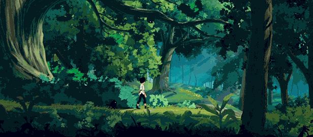
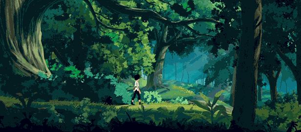

Planet of Lana
Wishfully (2023) Planet of Lana [Video Game]. Thunderful Publishing.
"A young girl and her loyal friend embark on a rescue mission through a colorful world full of cold machines and unfamiliar creatures. Planet of Lana is a cinematic puzzle adventure framed by an epic sci-fi saga that stretches across centuries and galaxies." - Steam Description
Planet of Lana - Steam PageIntro: Welcome~
Clever puzzles, cute companions, and an alien world teeming with life. Planet of Lana was an immersive experience that has left a permanent impression in my library of games. In this blog post I will aim to analyze what Planet of Lana did in order to achieve such an effect. Was it the puzzle design? The visual aesthetic? The game feel? Or did Mui carry the whole franchise single-handedly? Follow along as I dissect the game and uncover its secrets and techniques.
Meeting Mui
Mui... is the cutest little companion that anyone could ever ask for, but opinions aside, what role did Mui play in the game? Is Mui just a marketing scheme just to lure unsuspecting players into boosting the games revenue? I can assure you that Mui plays a much bigger role than that! Not only does Mui look adorable, but Mui is also an essential part to the puzzle design of the game.
Mui gladly obeys what the player directs him to do: run here, sit there, push this, talk to that. Mui's small size, excellent obedience, and surprising dexterity allows him to reach places that Lana can't reach. Mui, the perfect little creature he is, has one vital flaw... he is deadly afraid of water. Each of Mui's little quirks are utilized by the designers to their full extent to create head-scratching puzzles by building player habits and eventually breaking them! Whether its escorting Mui across a flooded area or telling him to interact with other alien life-forms, Mui's presence is for certain not meaningless.
There is a section in the game where Mui gets captured by the colonizing alien machines, those dirty barstards, and the player spends a portion of the game without Mui. There comes a great realization where without Mui, Lana feels even less powerful that she already is (more on this later). The player builds a habit of incorporating Mui into their puzzle solution, that playing without him feels... empty.
*PS. I believe that the game deserves extra praise for allowing the player to pet Mui no matter how extreme the situation is. i.e. mid a boss fight.
Game Feel
Tagged as a "puzzle-platformer", you would expect the player movement to feel clean and crispy, empowering the player to do crazy flips and double-jump their way through the game... but Planet of Lana doesn't allow the player to do that. Instead, the fastest Lana can go is a leisurely jog. Lana makes the shortest jumps look difficult, and if Lana falls for a bit longer than a second, she dies... Lana will spend more time grappling to edges than making successful jumps. Why would the game designers do that? Why did they "disempower" the player from the fantasy that was initially expected with its association to platforming games?
The answer... to make the player feel a part of a world closely grounded in reality. To feel a part of a realistic world means you can't jump in thin air, you can't jump as far as a professional long jumper, and you can't out-run a machine, especially if you are just a child. The limitations that the game designers implement, makes Lana feel more realistic. Lana is just a regular kid on a journey to rescue her best friend and free her people. It gets frustrating at times when Lana isn't able to do the things that you want her to do, but that strengthens the fact that you are just a kid... and the whole world is against you.
These limitations also make the pace of the game feel a lot slower. Puzzles drag out and, in some cases, may become tedious to complete. But the pacing is something that the player can come to appreciate when you bring the audio and visual elements of the game into conversation.
 

A Living Planet
The world that Planet of Lana puts the player in feels so... alive What did it do to achieve this? What does it enhance or intensify?
A gust of ambient wind blows past, you hear it rustle the leaves and brushes, you watch as the grass and leaves sway in natural chaos, and loose leaves drift past the screen. The world is constantly in motion. From the sprites squashing, stretching and swaying in the wind, to the occasional butterfly that flutters by, the game objects that "don't participate" in the mechanical play of the game still serve the purpose of adding liveliness to the game. The visual elements immerse the player visually in the Planet of Lana, but the game also incorporates audio elements that add and ambiance to the world that cannot be left out. Planet of Lana even incorporates audio as solutions to certain puzzles.
Planet of Lana trains the player into habits that pic up on visual and auditory motifs. The rhythmic beeping and flashing of the machines play a role in both the narrative and gameplay. Every time you hear mechanical beeping, you associate the scenario with the colonizing machines. And eventually this visual and auditory motif is spun on its head when Lana uncovers the lost history of the world.
Conclusion
The visual and auditory elements in Planet of Lana make the player feel a part of the environment. The world isn't just reacting to you, but the world itself is alive and acting on its own accord. Lana isn't some miracle baby who has superpowers and super-human athleticism, she is just a little girl trying desperately to save the people she cares about. Her compassion gains her the trust of Mui, and he helps her throughout the odyssey. The elements of the game allow the player to fully immerse themselves in the Planet of Lana. They aren't some unstoppable force that plows through the land, but rather another entity within the games rich eco-system.